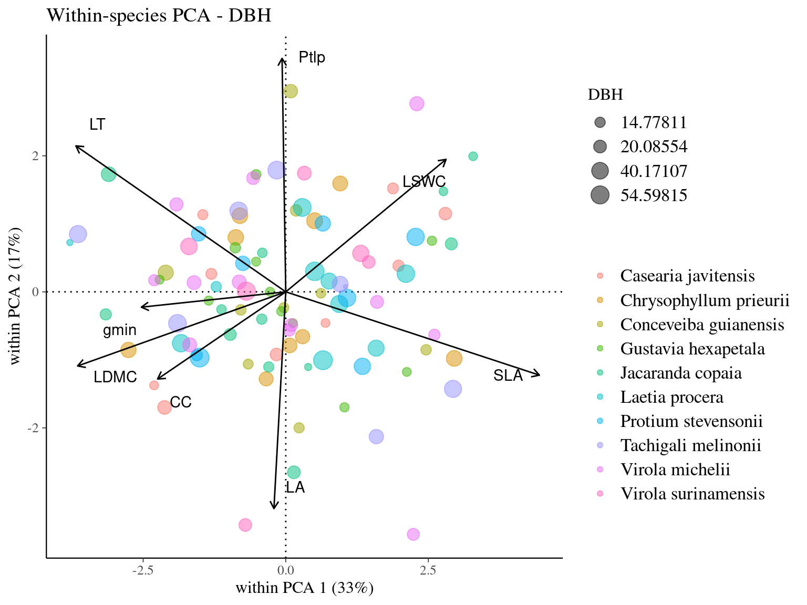
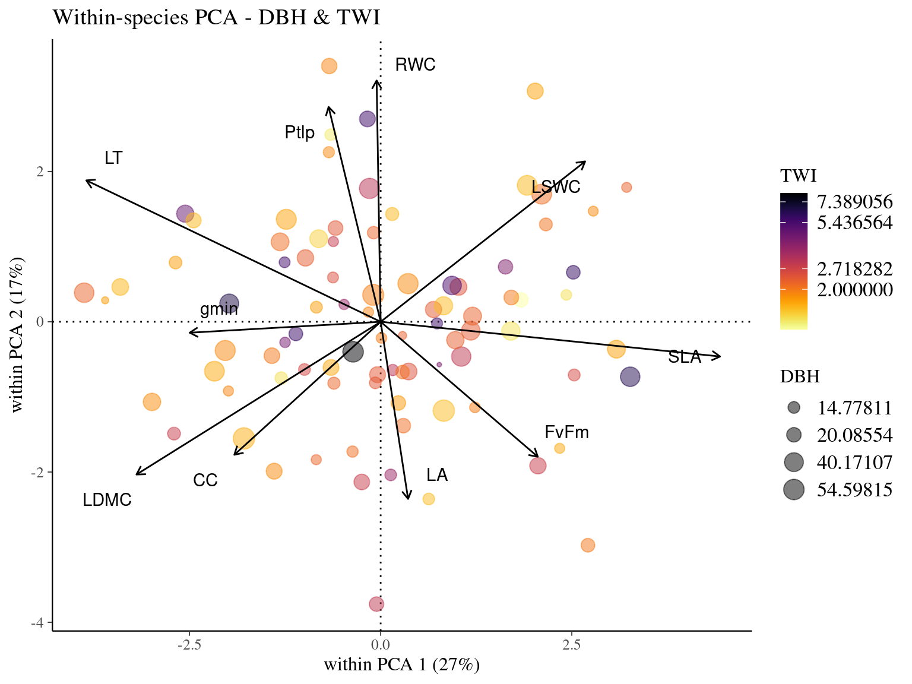

This book is in Open Review. I want your feedback to make the book better for you and other readers. To add your annotation, select some text and then click the on the pop-up menu. To see the annotations of others, click the in the upper right hand corner of the page
Chapter 7 Traits covariation
Subsequent analysis aimed to explore co-variations of individual traits. Specifically, we investigated individual traits co-variation at several taxonomic scales: among species, and within species.




